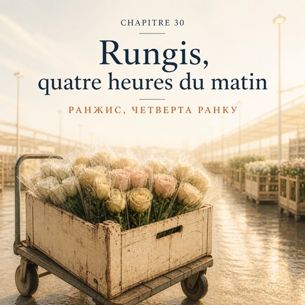

0:00
3:38
Натисніть речення, щоб почути його окремо.
Щоб слухати з підсвіткою — відкрийте сторінку в браузері.
Le vendredi 5 décembre — п'ятниця, 5 грудня
Le réveil sonne à trois heures vingt.
Будильник дзвонить о третій двадцять.
Dehors, pas de métro, pas de bus, pas un bruit. Montreuil dort comme un village.
Надворі ні метро, ні автобусів, ні звуку. Монтрей спить, як село.
À trois heures quarante, une camionnette blanche s'arrête en bas. Solange conduit.
О третій сорок унизу зупиняється білий фургончик. За кермом Соланж.
À l'intérieur, ça sent le carton mouillé et le café.
Усередині пахне мокрим картоном і кавою.
— Bonjour. Le gobelet est pour vous.
— Доброго ранку. Стаканчик — вам.
Le périphérique est vide. Vingt-cinq minutes.
Кільцева порожня. Двадцять п'ять хвилин.
Ce n'est pas un marché. C'est une ville.
Це не ринок. Це місто.
Des hangars longs comme des rues. Des camions qui reculent partout, avec ce bip qui ne s'arrête jamais.
Ангари, довгі як вулиці. Вантажівки, що всюди здають назад, із тим писком, який не стихає ніколи.
Quatre degrés dedans, quatre degrés dehors, et une lumière blanche au plafond.
Чотири градуси всередині, чотири надворі, і біле світло під стелею.
Le pavillon des fleurs à quatre heures du matin : des chariots, des caisses jusqu'en haut, deux cents personnes en manteau.
Квітковий павільйон о четвертій ранку: візки, ящики до самого верху, двісті людей у пальтах.
Tout le monde se connaît.
Тут усі одне одного знають.
Natalia n'a jamais vu autant de fleurs de sa vie.
Наталя за все життя не бачила стільки квітів.
Ici, personne ne dit « c'est joli ». Ici, on dit des chiffres.
Тут ніхто не каже «гарно». Тут кажуть цифри.
— La botte de vingt, douze euros. À partir de six bottes, onze euros.
— В'язка по двадцять — дванадцять євро. Від шести в'язок — одинадцять.
— Six bottes.
— Шість в'язок.
— Six. Rouge, blanc ?
— Шість. Червоні, білі?
— Quatre rouge, deux blanc. Et vos renoncules, elles sont à combien ce matin ?
— Чотири червоні, дві білі. А ранункулюси у вас сьогодні по скільки?
— Quatre-vingts centimes. Elles arrivent de Nice.
— Вісімдесят сантимів. Приїхали з Ніцци.
Solange achète vite. Elle touche, elle plie une tige, elle repose.
Соланж купує швидко. Торкається, згинає стебло, кладе назад.
Elle dit non trois fois plus souvent que oui.
Вона каже «ні» втричі частіше, ніж «так».
— Celles-là ont trop voyagé.
— Оці забагато їхали.
— Comment vous voyez ça ?
— Як ви це бачите?
— La coupe. Elle est sèche. Dans quatre jours, il n'y a plus rien.
— По зрізу. Він сухий. За чотири дні від них нічого не лишиться.
À cinq heures, le chariot est plein : quatre cent vingt tiges, six cartons, deux seaux.
О п'ятій візок повний: чотириста двадцять стебел, шість коробок, два відра.
À la caisse, Solange paie. Trois cent quatre-vingt-douze euros.
На касі Соланж платить. Триста дев'яносто два євро.
Natalia regarde le ticket. Elle fait un calcul dans sa tête, et le calcul la réveille mieux que le café.
Наталя дивиться на чек. У голові вона рахує — і цей рахунок будить її краще за каву.
— La rose est à cinquante-cinq centimes.
— Троянда коштує п'ятдесят п'ять сантимів.
— Et dans la vitrine, elle est à trois euros.
— А у вітрині вона три євро.
— Alors sur chaque rose, il reste...
— Отже, з кожної троянди лишається...
— Beaucoup moins que ce que vous croyez.
— Значно менше, ніж ви думаєте.
Solange compte sur ses doigts, sans se presser.
Соланж рахує на пальцях, не поспішаючи.
— La camionnette. L'essence. Le loyer, qui est six fois mon premier loyer.
— Фургон. Бензин. Оренда, яка вшестеро більша за мою першу оренду.
— La chambre froide, qui tourne toute la nuit. Ce qu'on jette : une fleur sur cinq en hiver.
— Холодильна камера, яка працює цілу ніч. Те, що викидаємо: узимку кожна п'ята квітка.
— Karim. Vous. Et moi, à la fin, s'il reste quelque chose.
— Карім. Ви. І я — наприкінці, якщо щось лишається.
— Et il reste quelque chose ?
— А щось лишається?
— Certains mois.
— Деякі місяці.
Elles ne disent plus rien pendant un moment.
Якийсь час вони більше нічого не кажуть.
À cinq heures et demie, elles boivent un café debout, dans un bar plein d'hommes levés depuis deux heures du matin.
О пів на шосту вони п'ють каву стоячи, у барі, повному чоловіків, які на ногах від другої ночі.
Personne ne parle fort. Tout le monde a les mains rouges.
Ніхто не говорить голосно. У всіх червоні руки.
Natalia ne sent plus ses doigts. Elle a envie de rire, et elle ne sait pas pourquoi.
Наталя вже не відчуває пальців. Їй хочеться сміятися, і вона не знає чому.
Le retour se fait au petit jour. À sept heures, elles déchargent devant la boutique.
Назад їдуть на світанку. О сьомій вони розвантажуються перед магазином.
Les caisses sont lourdes et le trottoir est gelé.
Ящики важкі, а тротуар обмерзлий.
À huit heures et quart, tout est rangé, coupé, dans l'eau.
О чверть на дев'яту все розібране, підрізане, у воді.
Karim pousse la porte à huit heures vingt-deux, écouteurs sur les oreilles. Pour lui, c'est un vendredi normal.
Карім штовхає двері о восьмій двадцять дві, навушники на вухах. Для нього це звичайна п'ятниця.
Natalia met les seaux dehors.
Наталя виставляє відра надвір.
Les roses sont froides. Ce matin, à quatre heures, elles étaient dans un carton, sous une lumière blanche, dans un hangar long comme une rue.
Троянди холодні. Сьогодні о четвертій ранку вони лежали в коробці, під білим світлом, в ангарі, довгому як вулиця.